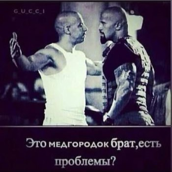

News and Fight
News
здесь есть все драки за год
и новости
Душанбадан ўқишга: таътиллар энди узайтирилмайди. Болалар боғчалари, мактаблар ва олий ўқув юртларида ўқиш қайси кундан бошланади?
• Тошкент –
23 —è–Ω–≤–∞—Ä
Bu insonni 1924-yilda o‚Äòldirishgan, tanasidan judo qilingan boshini esa maxsus suyuqlikka solib 2014-yilgacha saqlab kelishgan. Buning sababi u odamni oxirgi so‚Äòzlari butun Dunyoni qo‚Äòrqitgan. Uning oxirgi so‚Äòzlari...üò±
>>>>>> izgnoyy_ Padpiska tawamasen iloyim wunaq bol axxaxa

Один из силных фото